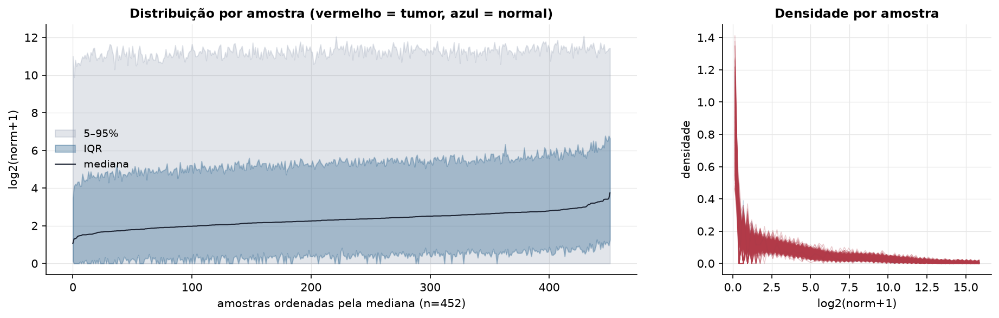
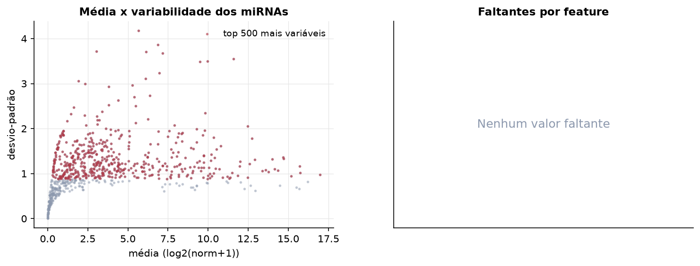
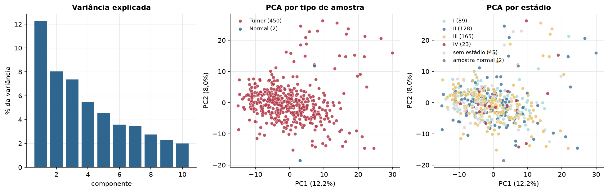
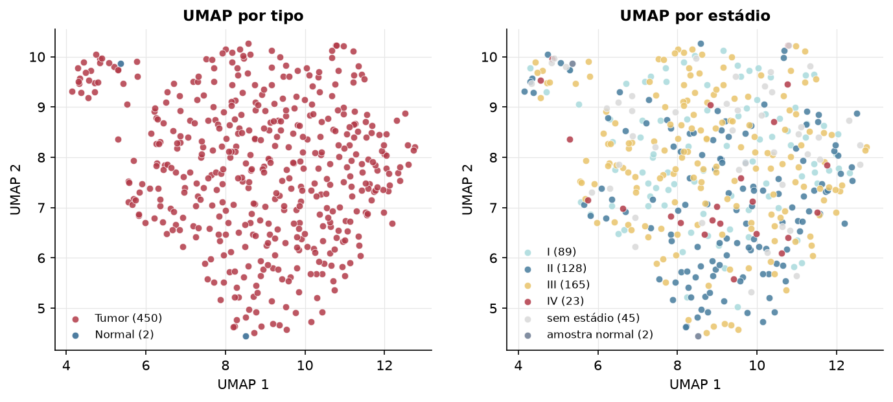
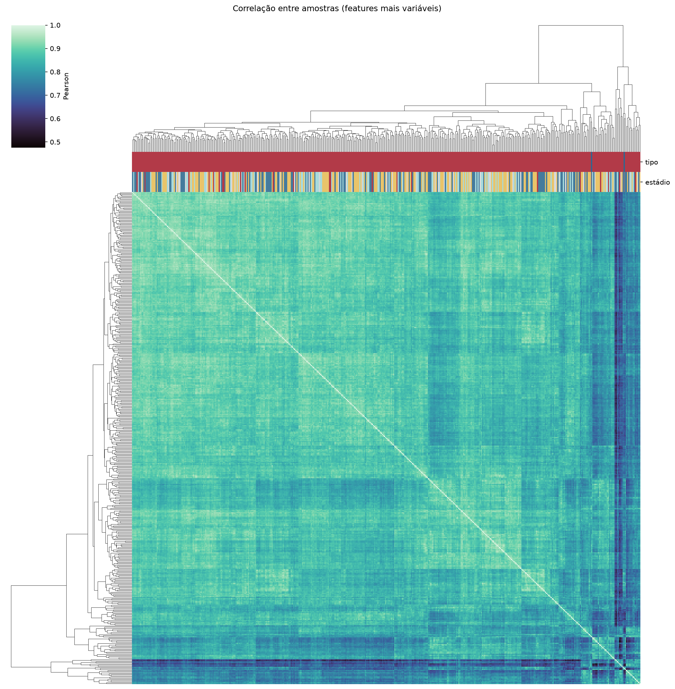
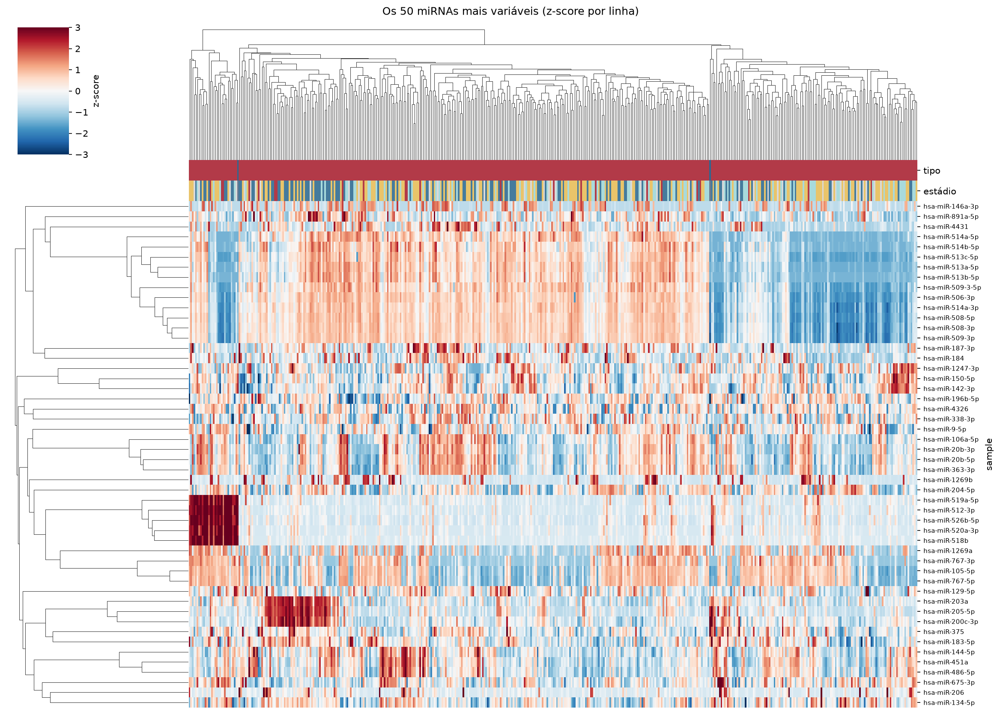
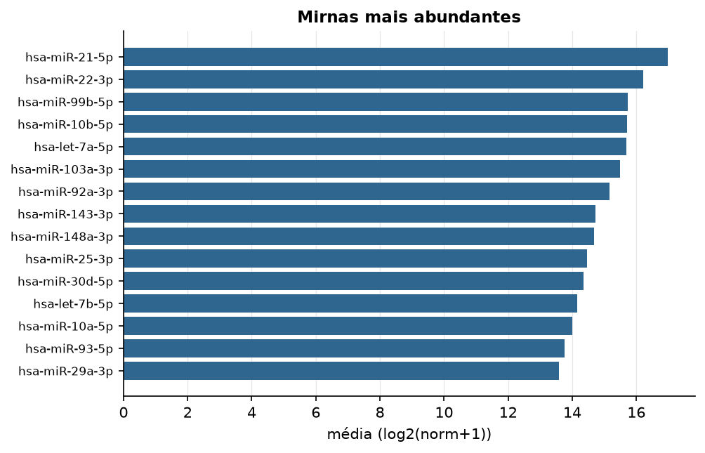

SKCM · miRNA-seq (PanCanAtlas)
miRNA maduro, normalizado e corrigido por lote (EB), log2(x+1) · gerado em 22/10/2026 04:09
743miRNAs
450amostras tumorais
2amostras normais
0,0%valores faltantes
Fonte: PanCanAtlas (pancanMiRs_EBadjOnProtocolPlatformWithoutRepsWithUnCorrectMiRs_08_04_16.xena)
Fita madura (5p/3p) já normalizada. As contagens brutas por precursor estão no relatório de contagens.
Principais resultados
- 743 miRNAs medidos em 452 amostras (450 tumorais e 2 normais); 0,0% dos valores estão faltando.
- Os dois primeiros componentes principais explicam 12,2% e 8,0% da variância das features mais variáveis.
- Correlação mediana entre amostras: 0,87.
- Amostras com correlação muito abaixo das demais (possíveis outliers técnicos): TCGA-FW-A3I3-06, TCGA-FS-A1ZC-06, TCGA-EE-A20B-06, TCGA-ER-A19G-06, TCGA-EE-A3AG-06, TCGA-D3-A2JO-06, TCGA-D3-A1Q8-06, TCGA-GN-A265-06, TCGA-FW-A3R5-11, TCGA-D3-A2JH-06.
- Há menos de 3 amostras normais, então a comparação tumor x normal não foi feita.
- Nenhum dos três primeiros componentes principais se associou a estádio, sexo, idade ou sobrevida com p < 0,05.
Distribuição dos valores


Estrutura das amostras




Associação com variáveis clínicas
p-valores da associação dos três primeiros componentes principais (só tumores) com estádio (Kruskal-Wallis), sexo (Mann-Whitney), idade (Spearman) e sobrevida global (Cox univariado).
| estádio (Kruskal) | sexo (Mann-Whitney) | idade (Spearman) | sobrevida OS (Cox) | |
|---|---|---|---|---|
| PC1 (12,3%) | 0.792 | 0.827 | 0.175 | 0.895 |
| PC2 (7,9%) | 0.75 | 0.266 | 0.559 | 0.53 |
| PC3 (7,3%) | 0.898 | 0.656 | 0.724 | 0.154 |
Mais abundantes
